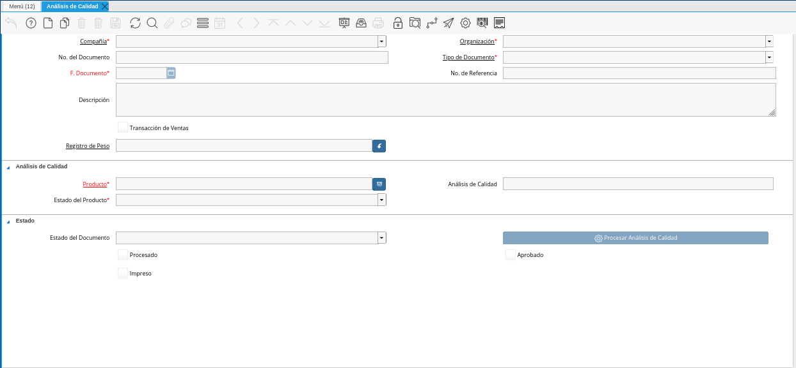

Análisis de Calidad¶
Ubique y seleccione en el menú de ADempiere, la carpeta “Gestión de Materiales”, luego seleccione la carpeta “Manejo de Materia Prima”, por último seleccione la carpeta “Análisis de Calidad”, finalmente seleccione la ventana “Análisis de Calidad”.
Imagen 1. Menú de ADempiere

Podrá visualizar la ventana “Análisis de Calidad”, con los diferentes registros que contiene dicha ventana.

Imagen 2. Ventana Análisis de Calidad
Seleccione el icono “Registro Nuevo”, ubicado en la barra de herramientas de ADempiere.
Imagen 3. Icono Registro Nuevo de la Ventana Análisis de Calidad
Seleccione en el campo “Organización”, la organización para la cual esta realizando el documento “Análisis de Calidad de Material”.
Imagen 4. Campo Organización de la Ventana Análisis de Calidad
Introduzca en el campo “No. del Documento”, el número de documento correspondiente a la secuencia del documento que se encuentra realizando.
Imagen 5. Campo No. del Documento de la Ventana Análisis de Calidad
Note
Si no es ingresado ningún valor en este campo, ADempiere asigna el número de secuencia establecido en la secuencia del tipo de documento utilizado.
Seleccione el tipo de documento a generar en el campo “Tipo de Documento”, la selección de este define el comportamiento del documento que se esta elaborando, dicho comportamiento se encuentra explicado en el documento Tipo de Documento elaborado por ERPyA.
Imagen 6. Campo Tipo de Documento de la Ventana Análisis de Calidad
Introduzca en el campo “F. Documento”, la fecha en la cual se esta realizando el documento “Análisis de Calidad de Material”.
Imagen 7. Campo F. Documento de la Ventana Análisis de Calidad
Introduzca en el campo “No. de Referencia”, el número de referencia correspondiente al registro que se encuentra realizando.
Imagen 8. Campo No. de Referencia de la Ventana Análisis de Calidad
Introduzca en el campo “Descripción”, una breve descripción referente al registro que se encuentra realizando.
Imagen 9. Campo Descripción de la Ventana Análisis de Calidad
El checklist “Transacción de Ventas”, indica que el registro se encuentra relacionado con transacciones de ventas en ADempiere.
Imagen 10. Checklist Transacción de Ventas de la Ventana Análisis de Calidad
Seleccione en el campo “Registro de Peso”, el registro de peso correspondiente al documento que se encuentra realizando.
Imagen 11. Campo Registro de Peso de la Ventana Análisis de Calidad
Seleccione en el campo “Producto”, el producto correspondiente al documento que se encuentra realizando.
Imagen 12. Campo Producto de la Ventana Análisis de Calidad
Podrá visualizar en el campo “Análisis de Calidad”, el registro de análisis de calidad correspondiente al documento que se encuentra realizando.
Imagen 13. Campo Análisis de Calidad de la Ventana Análisis de Calidad
Podrá visualizar en el campo “Estado del Producto”, el estado en el que se encuentra el producto asociado al documento que se encuentra realizando.
Imagen 14. Campo Estado del Producto de la Ventana Análisis de Calidad
Seleccione el icono “Guardar Cambios”, ubicado en la barra de herramientas de ADempiere, para guardar el registro de los campos de la ventana “Análisis de Calidad”.
Imagen 15. Icono Guardar Cambios de la Ventana Análisis de Calidad
Seleccione la opción “Completar” para completar el documento que se encuentra realizando.
Imagen 16. Opción Completar de la Ventana Análisis de Calidad
Seleccione la acción “Completar” y la Opción “OK”, para completar el documento “Análisis de Calidad de Material”.
Imagen 17. Acción Completar y Opción OK de la Ventana Análisis de Calidad